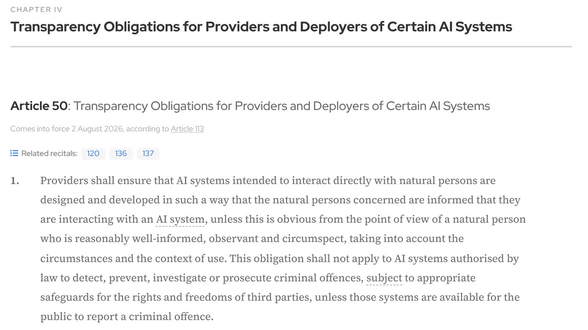

H ay una pregunta que conviene hacerse antes de montar nada: ¿por qué un asistente que responde de maravilla por escrito resulta insoportable por teléfono? La respuesta no tiene que ver con lo listo que sea el modelo. Tiene que ver con que una conversación hablada es un mecanismo con reloj. En un chat, el silencio mientras la otra parte escribe es normal y no significa nada. En una llamada, el silencio significa algo — que te toca hablar, que no te han oído, que se ha cortado — y la persona reacciona a esa señal antes de que tu agente haya terminado de pensar.
Esta guía no repite lo que ya cuenta la de clonar voz, transcribir y generar audio con IA, que es donde están las herramientas de transcripción y síntesis una a una y lo que la ley dice sobre usar la voz de alguien. Aquí el asunto es otro: juntar esas piezas en algo que descuelga un teléfono real, aguanta a una persona que interrumpe, y no cuelga dejando a un cliente peor que si no hubiera llamado.
1. El teléfono es el caso difícil, no el fácil
Mucha gente llega al agente de voz pensando que es un chatbot con altavoz. Es al revés: todo lo que un chat te perdona, una llamada te lo cobra. Por escrito puedes tardar tres segundos, corregirte a mitad de respuesta, mandar un párrafo largo y confiar en que la persona lo relea. Por voz no existe ninguna de esas tres cosas. El mensaje se consume a la velocidad a la que se pronuncia, no se puede releer, y cualquier pausa se interpreta como un turno de palabra.
Hay tres diferencias que condicionan todo el diseño. La primera es que el turno se negocia en tiempo real: las personas se solapan, se interrumpen y terminan las frases de otros, y un sistema que no sepa gestionarlo resulta agresivo o lento, nunca natural. La segunda es que no hay forma de revisar: un dato mal dicho se queda como lo oyó quien llamaba, y ese es el motivo de que las invenciones duelan más aquí que en ningún otro canal. La tercera es que no hay botón de atrás: si el agente se pierde, la persona no reformula la pregunta como haría escribiendo, cuelga.
De ahí sale la única recomendación que vale para todos los casos: empieza por el tipo de llamada más acotado que tengas, no por «que atienda todo». Confirmar una cita, dar un horario, tomar un recado con nombre y teléfono y pasarlo por correo son tareas con un final claro y poco que inventar. «Atención al cliente» no es una tarea, es una categoría.
2. Las dos formas de montarlo
Hoy hay dos arquitecturas, y la elección entre ellas condiciona más cosas de las que parece.
La cascada encadena tres piezas distintas: un reconocedor convierte el audio en texto (STT), un modelo de lenguaje decide qué responder, y un sintetizador convierte esa respuesta en audio (TTS). Es como se han montado casi todos los agentes de voz que están en producción. La voz a voz usa un solo modelo que recibe audio y devuelve audio, sin pasar por texto por el medio.
La tentación es elegir por latencia, y por latencia gana la voz a voz: las estimaciones que publican las consultoras especializadas en el sector sitúan un turno completo de voz a voz en torno a los 300–700 ms, frente a los 600–1.200 ms de una cascada bien montada. Pero la latencia es la razón menos importante para decidir, y conviene saber por qué.
En una cascada, entre el reconocimiento y la síntesis queda un texto. Ese texto es un punto de inspección: lo puedes registrar, revisarlo cuando un cliente se queje, medir sobre él, filtrarlo antes de que se pronuncie, y cambiar una pieza sin tocar las otras. En voz a voz ese punto no existe, y cuando el agente diga algo raro tendrás que depurar escuchando audio. Las mismas fuentes coinciden además en que la cascada sale bastante más barata cuando el volumen sube. La contrapartida honesta de la cascada es que cada pieza añade su retardo y que los errores se arrastran: lo que el reconocedor entendió mal, el modelo lo da por bueno.
Si es tu primer agente de voz y atiende clientes, monta la cascada. No por latencia, sino porque vas a necesitar ver qué pasó dentro mucho más de lo que crees. La voz a voz compensa cuando la naturalidad de la conversación es el producto y aceptas tener menos visibilidad.
3. El presupuesto de latencia, repartido
La cifra que se repite como objetivo es por debajo de 800 ms desde que la persona termina de hablar hasta que empieza a sonar la respuesta, y por debajo de 500 ms para que la conversación se sienta realmente fluida. Son estimaciones de consultoras y proveedores del sector, no un estándar publicado, así que tómalas como lo que son: un orden de magnitud sobre el que la mayoría coincide, no una medida oficial.
Lo útil es ver cómo se reparte ese presupuesto en una cascada, porque enseña dónde se puede recortar y dónde no:
- Reconocimiento (STT): del orden de 150–300 ms cuando va en continuo. Importa poco que suene a mucho, porque transcribe mientras la persona habla; lo que cuenta al final es solo el último tramo.
- El modelo: lo que queda, entre 200 y 700 ms. Y aquí lo que mides no es cuánto tarda en responder, sino cuánto tarda en empezar a responder — el tiempo hasta el primer token.
- Síntesis (TTS): 100–400 ms hasta el primer fragmento de audio. Igual que antes: lo que importa es cuándo empieza a sonar, no cuánto dura.
De esa aritmética salen tres consecuencias prácticas. Que todo tiene que ir en streaming: si esperas a tener la frase entera antes de sintetizarla, has perdido la carrera antes de empezar. Que el modelo más capaz no suele ser el adecuado, porque en voz pesa más empezar pronto que razonar mejor, y un modelo pequeño que arranca en 200 ms gana a uno excelente que arranca en 900. Y que si tu agente tiene que consultar algo —una base de datos, tu agenda, un sistema de reservas— esa consulta compite por el mismo presupuesto: conviene lanzarla en cuanto se intuye la intención, y tener preparada una muletilla honesta («déjame que lo mire un momento») para los casos en los que no llegue a tiempo.
Una advertencia sobre cómo medir: mide el percentil 95, no la media. La media la arreglan las llamadas fáciles. Quien cuelga es siempre el del percentil malo.
4. El problema difícil: saber cuándo has terminado de hablar
Si tuviera que señalar la pieza que hunde más agentes de voz, no sería el reconocimiento ni la síntesis. Sería decidir en qué momento te ha tocado hablar. En la jerga se llama endpointing o detección de fin de turno, y es un problema genuinamente difícil porque la señal que lo delata —el silencio— significa cosas distintas según el momento.
Piensa en alguien dictando un número de teléfono: «seis seis siete… (pausa) …cuatro dos uno». Esa pausa de medio segundo no es el final del turno, es alguien recordando. Si tu agente espera 400 ms de silencio para empezar a hablar, le va a cortar en mitad del número. Si espera 1.500 ms para no cortarle nunca, entonces cada respuesta normal llega con segundo y medio de retraso y la conversación se vuelve pastosa. No hay un número que resuelva los dos casos a la vez, y por eso los sistemas serios no usan solo el silencio: combinan la duración de la pausa con si la frase parece terminada, y ajustan la espera según lo que se acaba de preguntar — más paciencia después de pedir un número o una dirección, menos después de una pregunta de sí o no.
El reverso es la interrupción: que la persona pueda cortar al agente mientras habla y que el agente se calle de inmediato. Parece un detalle y es justo lo que separa una conversación de un contestador. Exige dos cosas que conviene comprobar antes de elegir proveedor: que el sistema siga escuchando mientras habla, y que al cortarse sepa qué parte de su mensaje llegó a sonar realmente — si da por dicho algo que la persona no oyó, el resto de la llamada se construye sobre un malentendido.
Si vas a probar herramientas, estas dos cosas son las que hay que probar. Las demos siempre se graban con alguien que habla despacio, por turnos y sin ruido de fondo. Tus clientes llamarán desde la calle.
5. Lo que añade el teléfono por su cuenta
Hasta aquí todo valdría para un agente de voz dentro de una web. El teléfono añade su propia factura, y es de las cosas que nadie menciona hasta que el prototipo pasa a producción.
La red telefónica tradicional transporta la voz con una calidad muy inferior a la de un micrófono de ordenador: menos banda de frecuencias y audio comprimido para que ocupe poco. Eso no es un detalle estético, degrada el reconocimiento — y lo degrada justo donde más duele, en los números, las letras sueltas y los apellidos poco comunes. Un reconocedor que en tus pruebas por el portátil funcionaba impecable puede empeorar de forma apreciable por teléfono sin que hayas cambiado nada. Si vas a trabajar en español con nombres propios españoles, pruébalo por una llamada real desde el principio, no por el micro del ordenador.
Súmale que el transporte de la llamada también consume parte del presupuesto de tiempo del que hablábamos antes, y que hay dos cosas que ningún modelo arregla: las llamadas se caen, y a veces quien descuelga al otro lado es un buzón de voz. Merece la pena decidir desde el principio qué pasa en ambos casos, porque si no lo decides tú, el comportamiento por defecto suele ser el peor posible — un agente hablándole a un contestador durante dos minutos, o una llamada que se corta sin que quede rastro de lo que la persona pedía.
6. Lo que estás obligado a decir, y cuándo
Aquí no hay margen de interpretación y conviene tenerlo claro antes de escribir el guion. El artículo 50 del Reglamento Europeo de Inteligencia Artificial obliga a que los sistemas de IA pensados para interactuar directamente con personas estén diseñados de forma que esas personas sepan que están hablando con una IA, salvo que resulte obvio para alguien razonablemente informado, atento y perspicaz. Un agente que atiende tu teléfono entra de lleno en ese supuesto.
El apartado 5 del mismo artículo añade el detalle que define el guion: la información debe darse de forma clara y distinguible, y como muy tarde en el momento de la primera interacción. Traducido a una llamada: al principio, no al final, y no enterrado en una frase larga. Esas obligaciones de transparencia se aplican desde el 2 de agosto de 2026, según el calendario del propio reglamento. Si quieres el contexto completo de la norma —qué es riesgo limitado, qué sanciones hay y a quién le toca cada obligación—, está en la guía sobre el AI Act explicado.
En la práctica, esto es una frase al descolgar. Algo del tipo «le atiende el asistente virtual de [negocio]; si prefiere hablar con una persona, dígamelo en cualquier momento» cumple las dos cosas a la vez: avisa de lo que es y abre la puerta de salida. No hace falta que sea solemne ni que suene a aviso legal; hace falta que esté al principio y que se entienda.
Y una cautela sobre la excepción del «es obvio»: apoyarse en ella es frágil, porque lo que hoy se nota puede dejar de notarse con el siguiente modelo de voz, y entonces pasas a incumplir sin haber tocado nada. Varios análisis jurídicos de las directrices que la Comisión Europea publicó en julio de 2026 (según firmas de abogados, el 20 de julio, referencia C(2026) 5054; no hemos podido abrir el texto original de la Comisión) señalan además que esa excepción debe interpretarse de forma restrictiva. Cuesta dos segundos decirlo.
Aparte queda la grabación de las llamadas, que es un asunto distinto y se rige por la normativa de protección de datos: si grabas, necesitas una base jurídica, tienes que informar de que grabas y para qué, y usar las grabaciones para ajustar un modelo es una finalidad distinta de atender la llamada, que se informa aparte. Comprueba también qué hace tu proveedor con el audio por defecto. Ese terreno lo cubre la guía sobre cómo proteger tus datos al conectar la IA.
7. Que no se invente nada: el guion no es un prompt
Un dato inventado por escrito es molesto. Dicho por teléfono es otra cosa: quien llama lo apunta y cuelga convencido. No puede releerlo, no puede comprobarlo y no tiene a quién preguntarle. Por eso la regla que ya vale para cualquier asistente vale aquí con más motivo — y es, palabra por palabra, el planteamiento de la guía sobre montar un bot de atención al cliente que no invente respuestas.
Lo esencial cabe en una frase: los datos que cambian no van en el prompt. Precios, horarios, disponibilidad y estado de un pedido se consultan a tu sistema en el momento de la llamada. Un precio metido en las instrucciones del agente es un precio que seguirá diciendo seis meses después de que lo hayas cambiado, y nadie se dará cuenta hasta que un cliente se presente a pagar lo que le dijeron por teléfono.
Y hace falta decidir qué pasa cuando la consulta falla o no hay respuesta. La opción correcta es casi siempre la aburrida: que lo diga y pase la llamada. Un agente que rellena el hueco con algo plausible es peor que uno que admite que no lo sabe, porque el primero hace daño en silencio. En el guion esto se traduce en dar una salida explícita para no saber — si no se la das, el modelo encontrará algo que decir, que es exactamente lo que hacen los modelos de lenguaje.
8. El traspaso a una persona
Un agente de voz sin una salida clara hacia un humano no es un agente, es una trampa. Y conviene diseñar esa salida como parte del sistema, no como el plan B que se improvisa cuando ya hay quejas.
Tres cosas que marcan la diferencia. Que haya disparadores explícitos, y que uno de ellos sea simplemente pedirlo: si alguien dice «quiero hablar con una persona», ese es el final de la conversación con el agente, sin insistir ni pedir que explique por qué. Que se pase el contexto con la llamada: quien reciba la llamada tiene que ver qué se ha hablado ya, porque obligar a repetirlo todo desde el principio hace que la gente prefiera no haber llamado nunca al número. Y que esté decidido qué pasa cuando no hay nadie — a las once de la noche no hay a quién pasar la llamada, y «tomo el recado, le llamamos mañana antes de las doce» es una respuesta honesta; dejar que el agente siga intentándolo no lo es.
Un detalle de redacción que vale la pena: el traspaso no debería sonar a fracaso. «Le paso con un compañero que lo ve mejor que yo» funciona mejor que «no puedo ayudarle con eso», y describe la realidad igual de bien.
9. Qué medir — y cuándo no montarlo
El error de medición más común es mirar cuántas llamadas atendió el agente sin pasarlas a nadie, y llamar a eso éxito. No lo es: una llamada que el agente «resolvió» y que termina con la persona llamando otra vez media hora después es un fallo contado como acierto. Vale más vigilar cuatro cosas: la latencia en percentil 95, cuánta gente vuelve a llamar por lo mismo poco después, en qué punto exacto se pide hablar con una persona —ahí está la lista de lo que hay que arreglar, ordenada por frecuencia— y cuántas llamadas se cortan sin que nadie cuelgue a propósito. La guía sobre cómo evaluar un agente de IA desarrolla el método; lo específico de la voz son esos cuatro números y escuchar llamadas reales todas las semanas, que es aburrido y no tiene sustituto.
Y conviene cerrar por donde casi nadie cierra: los casos en los que esto no se monta. Si el volumen de llamadas es bajo, el agente cuesta más de mantener de lo que ahorra — mantener un guion, revisar llamadas y corregir desvíos es trabajo recurrente, no una instalación. Si lo que se maneja en esas llamadas es delicado —salud, dinero de alguien, situaciones en las que la persona puede estar nerviosa o en apuros—, el listón de fiabilidad sube a un sitio donde esto todavía no llega cómodamente. Y si la llamada termina casi siempre en una persona de todas formas, lo que necesitas no es un agente que hable: es que la información llegue ordenada a quien la va a atender.
La prueba que mejor funciona antes de decidir es llamar tú mismo a tu número doce veces seguidas, desde la calle, con prisa y pidiendo cosas raras. Si al final de las doce no te has desesperado ninguna vez, está listo para que lo llamen tus clientes.
Qué ha cambiado en 2026
Tres cambios recientes que afectan a quien monta un agente de voz o ya tiene uno funcionando:
- Modelos de voz de OpenAI que se retiran. La página oficial de deprecaciones lista, con apagado el 6 de enero de 2027, los modelos de voz tts-1, tts-1-hd y dos versiones de gpt-4o-mini-tts, con gpt-realtime-2.1-mini como sustituto recomendado. Si tu cascada sintetiza con alguno de ellos, planifica el cambio y repite tus pruebas por teléfono. Fuente: deprecaciones de OpenAI y nuestra noticia.
- Un modelo de voz a voz más barato y con telefonía. Según su ficha, gpt-realtime-2.1-mini admite conexión SIP (telefonía), WebRTC y WebSocket, tiene 128.000 tokens de contexto y cuesta 10 $ por millón de tokens de audio de entrada y 20 $ de salida (0,60 $ y 2,40 $ en texto). OpenAI dice que mejora el reconocimiento de caracteres alfanuméricos, lo que importaría para teléfonos y matrículas; es una afirmación del fabricante que debes probar tú. Ficha: gpt-realtime-2.1-mini.
- El aviso de IA ya se exige, y el aplazamiento no lo toca. Las obligaciones del artículo 50 se aplican desde el 2 de agosto de 2026. Según los análisis jurídicos que hemos consultado, el aplazamiento del Digital Omnibus afecta a los sistemas de alto riesgo, y el plazo extra hasta el 2 de diciembre de 2026 es para el marcado técnico del contenido generado (artículo 50.2), no para el aviso de que hablas con una IA. Confírmalo en el texto oficial antes de decisiones jurídicas. Resumen de las directrices: análisis de un despacho.
Los precios cambian: comprueba la ficha del modelo antes de presupuestar.
Guion de partida y llamadas de prueba
Plantilla para el inicio de la llamada y los casos que más fallan. Adáptala y pruébala por teléfono real:
Eres el asistente virtual de [negocio]. Hablas en español de España, con frases cortas (máximo 20 palabras).
Al descolgar, di siempre: "Le atiende el asistente virtual de [negocio]. Si prefiere hablar con una persona, dígamelo en cualquier momento."
No digas precios, horarios ni disponibilidad de memoria: consulta siempre la herramienta. Si la herramienta falla o no devuelve datos, di "Ahora mismo no puedo confirmárselo" y ofrece pasar con una persona o tomar un recado.
Cuando te dicten un teléfono, un nombre o una dirección, repítelos y pide confirmación antes de continuar.
Si detectas un buzón de voz, deja un mensaje de 10 segundos con el nombre del negocio y cuelga.
Si la persona pide hablar con alguien, pasa la llamada sin pedir explicaciones.Después, recorre esta tabla de llamadas de prueba. Mide los resultados con el método de la guía de evaluación.
| Llamada de prueba | Qué debe ocurrir |
|---|---|
| Desde la calle, con ruido de tráfico | Entiende o pide repetir; no inventa |
| Dictar un teléfono con pausas | No te corta a mitad del número |
| Interrumpir al agente a mitad de frase | Se calla y escucha |
| Preguntar un precio con la herramienta caída | Dice que no puede confirmarlo y ofrece alternativa |
| Pedir hablar con una persona | Pasa la llamada a la primera |
| Hablar en otro idioma | Sigue el comportamiento que hayas decidido (avisar, traspasar o seguir) |
| Colgar a mitad | No deja la llamada abierta ni pierde el recado ya tomado |
| Dejar que descuelgue un buzón de voz | Mensaje breve y cuelga, sin hablar dos minutos |
Cuánto cuesta una llamada: cómo calcularlo con tus propias pruebas
El panel de tu proveedor te dará el coste por llamada; no lo estimes a ojo. Método sencillo:
- Haz diez llamadas de prueba con duraciones distintas (una corta, una con interrupciones, una larga).
- Apunta el coste que muestra el panel de uso y la duración de cada una.
- Divide el coste total entre los minutos totales: ese es tu coste por minuto real.
- Multiplica por los minutos que esperas al mes y suma la telefonía (la línea o el número) y los costes de las herramientas que consulta.
- Compara con lo que cuesta la atención humana de esas mismas llamadas, incluido el tiempo de revisar las grabaciones del agente.
Para el cálculo general de tokens y precios, tienes la guía de costes de API, y para poner topes a lo que corre solo, la guía de límites de gasto.